Discografia
Álbuns
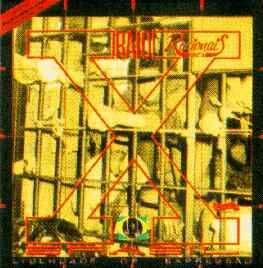
 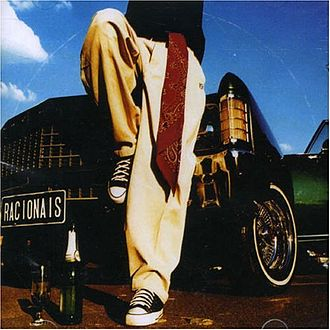
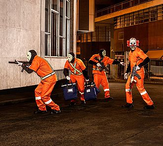
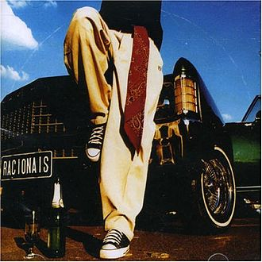
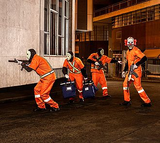
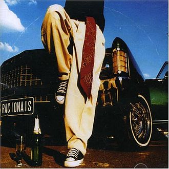
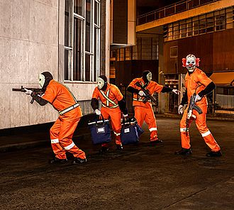
EP's
 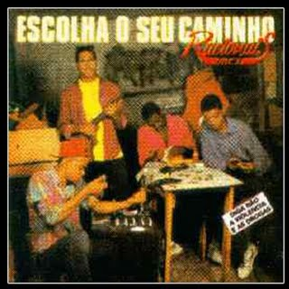
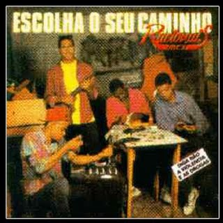
Ao Vivo
 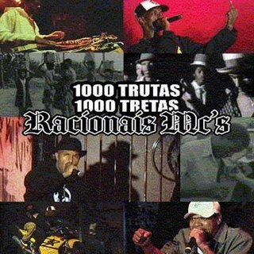
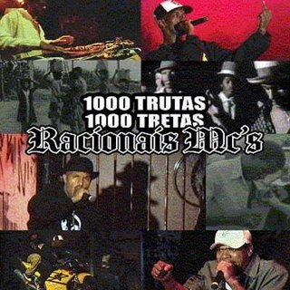
Racionais MC's é um grupo brasileiro de rap fundado em 1988. É formado por Mano Brown, Ice Blue, Edi Rock e KL Jay. É o maior grupo de rap do Brasil, e está entre os grupos musicais mais influentes do país e da música brasileira. Suas canções demonstram a preocupação em denunciar a destruição da vida de jovens negros e pobres das periferias brasileiras e o resultado do racismo e do preconceito, ao sustentarem a miséria diretamente ligada com a violência e o crime. Temas como a brutalidade da polícia, do crime organizado e do estado, bem como o preconceito, as drogas e a exclusão social são recorrentes nas letras do conjunto. Embora inicialmente conhecido apenas na capital paulista, o grupo conseguiu alcançar sucesso significativo a partir dos álbuns Raio X Brasil (1993), Sobrevivendo no Inferno (1997) e Nada como um Dia após o Outro Dia (2002).
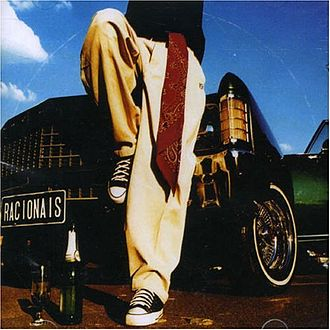
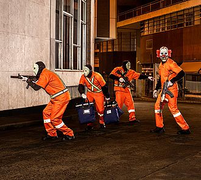
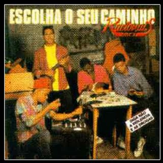
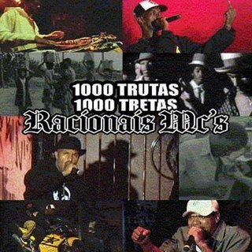